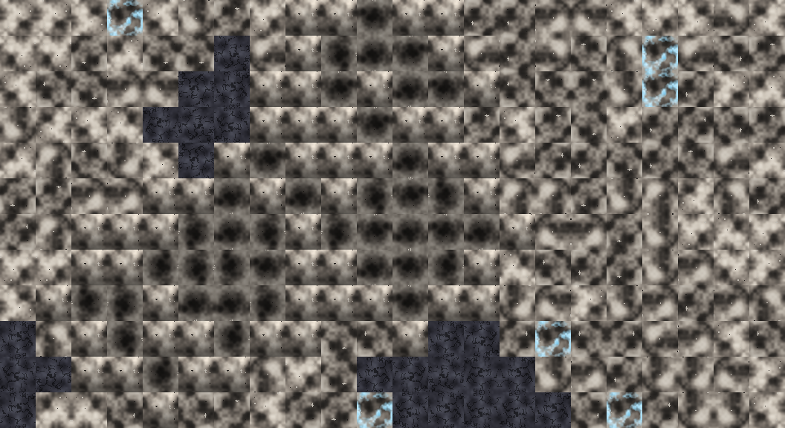
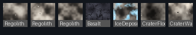
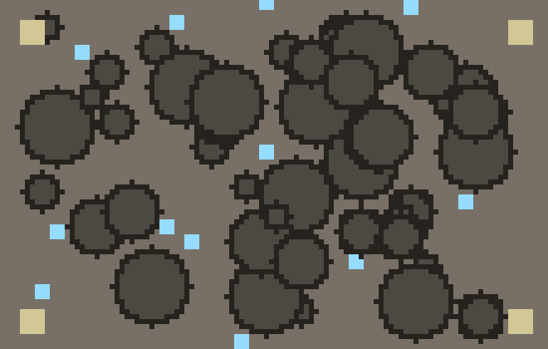

Space-Age total conversion · OpenRA · GPLv3
A real-time strategy game where you fight on the Moon — manage oxygen instead of fuel, bound across the surface in 1/6 gravity, and keep your troops alive under pressurised domes.
Overview
Lunar Red Alert keeps the fast, classic RTS gameplay of OpenRA’s Red Alert and moves the whole war to a cold, airless world. Every design decision follows one question: what changes when there’s no air and barely any gravity? Your infantry carry a finite air supply. Step outside a pressurised zone and the countdown begins. Artillery hangs in the low-gravity sky. Craters wall off the battlefield into natural chokepoints.
A total conversion of OpenRA — the mature, open-source C#/.NET remake of the Westwood RTS engine. Not a mock-up: real traits, real YAML, real gameplay.
The full OpenRA conversion is a desktop game (Win/Linux/macOS). A separate web-native prototype — same lunar mechanics, built for the browser — is playable right here, no install.
Evolved from OpenRA and released under the same GNU GPLv3. You can read, build, modify and share every line.
Environment
Every soldier carries an air tank that drains tick-by-tick in vacuum and refills inside a pressurised bubble. An empty tank grants a “suffocating” state the rest of the game reacts to.
Out of air and out of shelter, a unit takes periodic vacuum damage until it either reaches pressure or dies. Vehicles are sealed and immune.
Infantry bound at ~140% speed in 1/6 g; vehicles handle differently; arcing shells travel farther and hang longer. Gravity is a single world-level value (Moon 16% · Mars 38%).
Your base structures project a life-support field. Inside it, troops breathe and heal their air; push the front line forward by building outward.
Look & feel
These are real outputs from the mod’s asset tools — not concept art. The Phase 3 generator bakes a cohesive, seamlessly-tiling lunar tile set (regolith, basalt, ice, crater floor & cliffs) in a unified palette.

tools/gen_lunar_terrain.py) composed into a map region: regolith plains, dark basalt flats, cyan ice deposits (the resource), and walled crater clusters. Engine-style variant rotation breaks grid repetition.

gen_map.py layout: plains, walled craters, ice, and corner spawn pads.Under the hood
The mechanics are implemented as real OpenRA engine traits (C#) plus a lightweight data-only mod. Nothing here is placeholder.
Oxygen.cs — air supplyDamagedByVacuum.cs — hazardGravitySpeedModifier.cs — low-gOxygenBar.cs — O₂ meterLowGravity.cs — world gravitymod.yaml — manifestspaceage-defaults.yaml — traitsspaceage-structures.yaml — domestools/gen_*.py — asset genSPACE-AGE-DESIGN.md — full planA soldier’s vacuum survival, in engine terms — a trait that damages exposed, airless units, modelled on OpenRA’s own DamagedByTerrain:
// fires every DamageInterval ticks while a unit is exposed and out of air void ITick.Tick(Actor self) { if (safe) { ticks = 0; return; } // under a dome / sealed hull if (Info.RequireOxygenDepleted && oxygen?.Current > 0) { ticks = 0; return; } if (--ticks <= 0) { ticks = Info.DamageInterval; self.InflictDamage(self.World.WorldActor, new Damage(Info.Damage, Info.DamageTypes)); } }
Play it
The game is a desktop OpenRA mod, so “playing” means building the engine once on a machine with the .NET SDK. First launch downloads the Red Alert content it reuses.
# 1. get the code git clone https://github.com/dr-richard-barker/Lunar_Red_Alert.git cd Lunar_Red_Alert # 2. build the engine + lint the mod make ./utility.sh spaceage --check-yaml # 3. launch the Space-Age mod ./launch-game.sh Game.Mod=spaceage
Once in a skirmish: build a base, send infantry into the open and watch the O₂ bar drain, then pull them back under the dome to refill. Full verification checklist is in SPACE-AGE-README.md.
Roadmap
World-level low gravity + low-g movement traits. No changes to the engine core.
Air supply, vacuum damage, pressurised domes, the O₂ meter — all wired onto RA units.
A seamless-tiling terrain generator (regolith, basalt, ice, crater floor & cliffs) in a unified lunar palette is done — see the gallery above. Remaining: import the sprites into an OpenRA tileset, author crater-rim transition tiles, and wire ice as the harvestable resource.
Build on a .NET machine, verify the checklist, then package desktop installers for Windows / Linux / macOS.